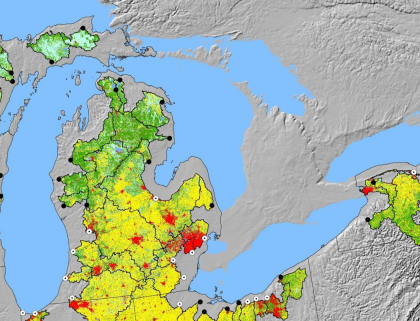

Implementation of the Great Lakes Observing System
Template #332

This project will provide direct support for Great Lakes Observing System (GLOS) Department of Interior backbone activities within the Midwest Area office of the U.S. Geological Survey, including: the deployment and support of observation platforms, water quality statistical models to link constituents in laboratory-analyzed samples with in-stream continuous-sensor measurements, and information system infrastructure development and implementation to provide a data platform to support real-time decision support needs.
Purpose
To provide real-time data and information for understanding and prioritizing Great Lakes Restoration work.
Description of Work
- Purchase and deploy equipment to support data collection efforts as part of the GLRI. The equipment may include: expanded stream gaging sensors, automated water chemistry sampling, real-time water sensors, integrated passive organic bio-concentrating samplers, Chromophoric dissolved organic matter sensors, deep water rosette sampler, automated lagrangian water-quality assessment systems, horizontal sediment traps, autonomous underwater vehicles, data-loggers, and field equipment deployment shelters.
- Collect and analyze chemistry samples for development of surrogate relationships between laboratory-analyzed samples with in-stream continuous-sensor measurements.
- Develop water-quality statistical models of surrogate relationships and time series estimates of loads in support of nearshore and toxic chemical GLRI projects.
- Compile USGS data and improve USGS real-time data feeds for the Great Lakes Basin to form the DOI backbone that links USGS databases to GLOS via common data formats and exchange interfaces.
Point of Contact
Charles A. Peters
capeters@usgs.gov
Dan Sullivan
djsulliv@usgs.gov